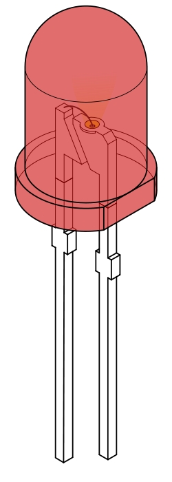
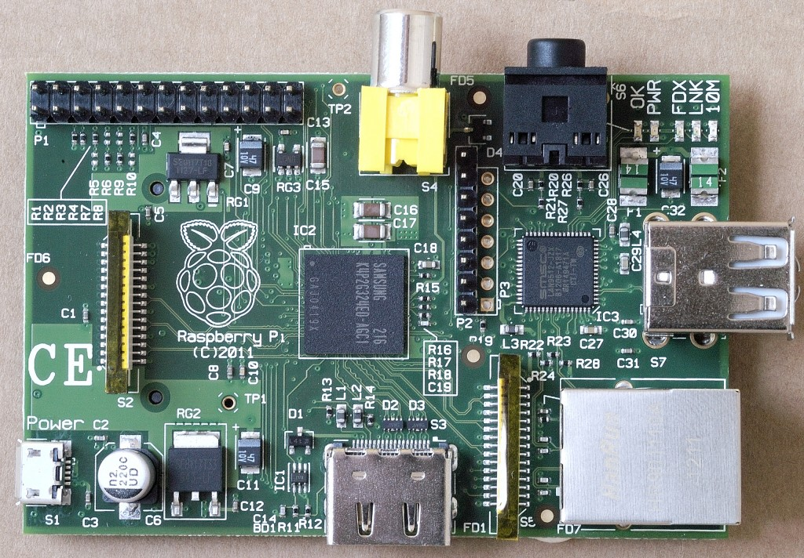
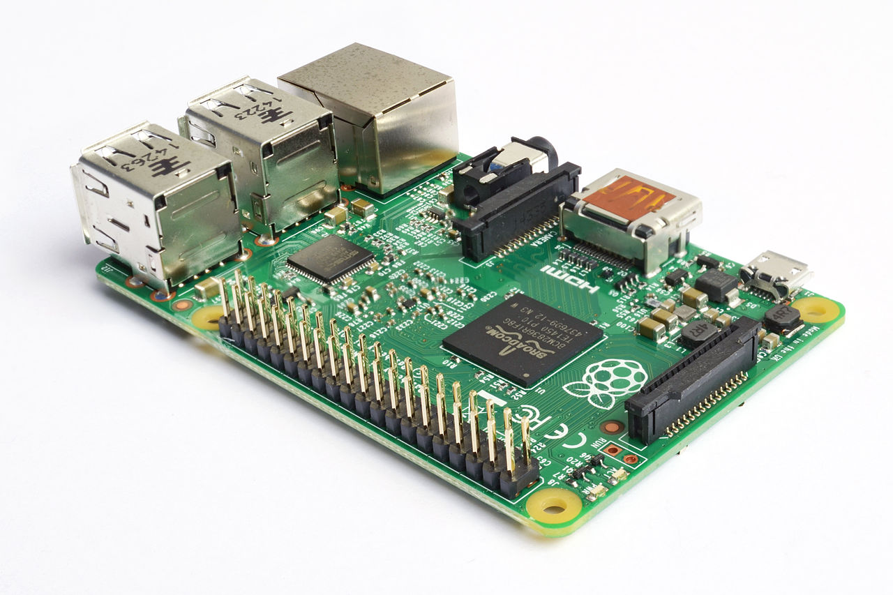
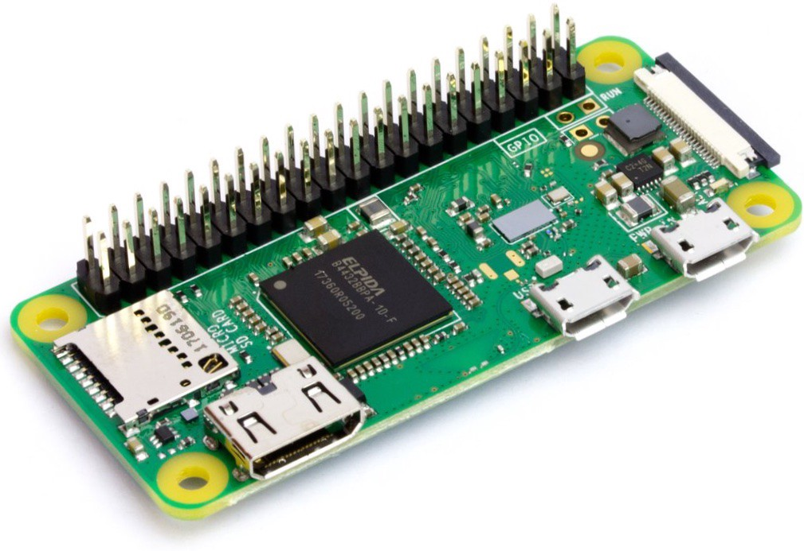
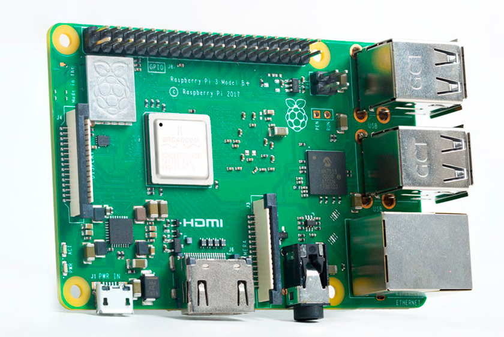
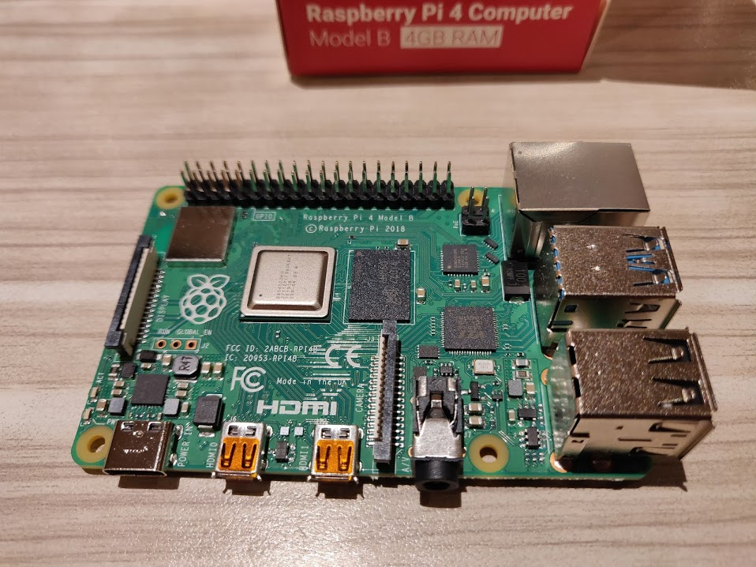
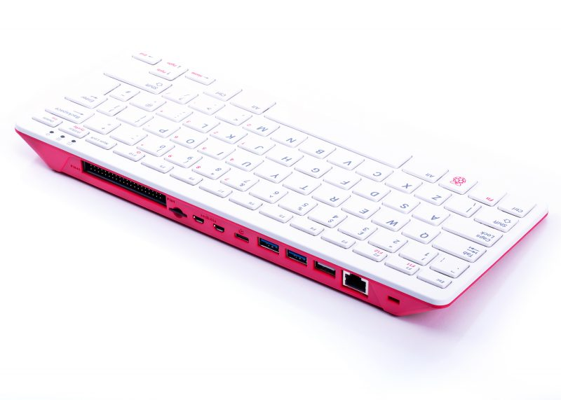
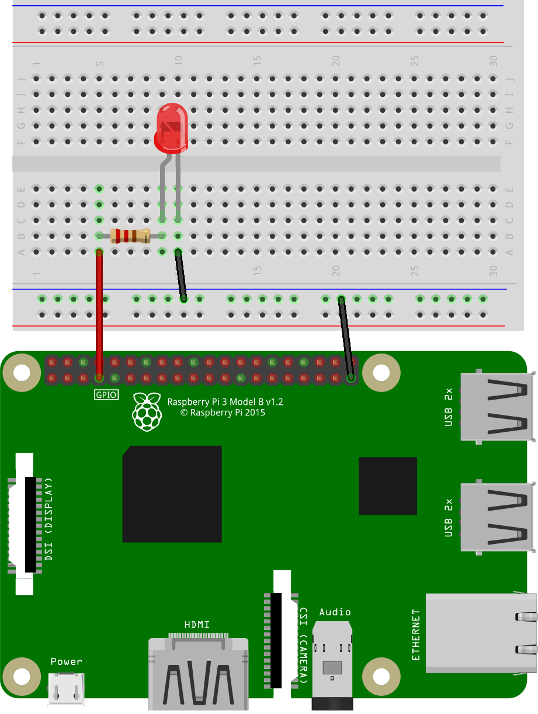
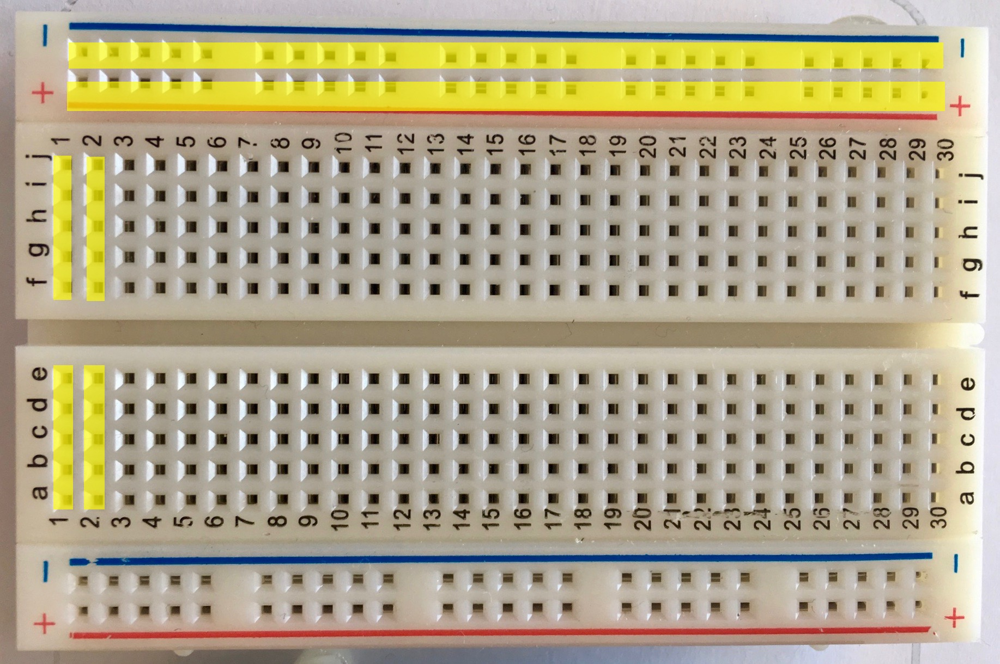

⚠ Verifica se tens o Raspberry Pi OS instalado no teu Raspberry antes de começar o tutorial. Se não tens ideia sobre o que estou prá'qui a falar, continua a ler.
Geralmente, existem kits que já trazem de raíz um Raspberry Pi e um cartão SD com o sistema operativo pré-instalado.
No entanto, muitas vezes esse cartão não está incluido na compra da board, pelo que pode ser adquirido em qualquer loja ou até pode ser
reutilizado de um telemóvel. Para os novos Raspberry Pi, têm que ser um cartão micro SD, daqueles pequeninos.
Podes adquirir num destes sites, se resides em Portugal:
Numa maneira geral, qualquer cartão micro SD funciona.
⚠ E... espera lá! Estás a ler isto sem teres um Raspberry Pi!?! Não fujas que eu te ajudo a escolher...
Segue o passo 2, caso contrário, se realmente já tiveres um Raspberry Pi, salta para o passo 3.
O que é um Raspberry Pi, perguntam vocês? Um Raspberry Pi é um computador do tamanho da palma da mão que permite fazer magia. Essencialmente magia.
Possui quarenta portinhas que podem ser controladas através de código, abrindo e fechando a passagem para a eletricidade.
Com isto, podemos ligar e desligar luzes. Fazer rodar grandes rodas à velocidade que bem entendermos. Saber o quão frio está lá fora.
Determinar até, a distância entre duas paredes de casa. Ou talvez, um robot que se esquiva de obstáculos.
Existem vários modelos de Raspberry Pi:

Sendo um modelo mais antigo (o primeiro!), não tem acesso à rede sem fios (por wireless), tem um processador mais fraquinho e menos memória (entre 256MB e 512MB).
Tem também, ao contrário dos outros Raspberry Pi, 26 pinos - as tais portas controláveis que referi anteriormente.
Já foi descontinuado, sendo agora muito dificil de encontrar e comprar.

Já tem um processador superior em comparação ao computador anterior, e tem muito mais memória (1GB, duas vezes 512MB ou até quatro vezes 256MB!).
Assim como os Raspberry Pi mais modernos, já tem quarenta pinos ao contrário do anterior.

É uma versão ultra pequena do primeiro Raspberry Pi. E como tal, tem o mesmo processador, a mesma quantidade de memória, mas tem quarenta pinos.
À semelhança do primeiro, não tem ligação WiFi.
Infelizmente, sendo muito pequeno não tem porta de rede para ligarmos ao router de casa ou até mesmo a uma ficha de rede algures em casa.

Tem três versões com o mesmo processador melhorado em comparação aos anteriores - o B, o A+ e o B+.
A versão mais antiga é a "B". Possui 1GB de memória, porta de rede, WiFi, e 40 pinos.
A versão mais compacta é a "A". Possui 512MB de memória, não tem porta de rede, mas tem WiFi, e 40 pinos. É uma versão compacta e mais pequena do modelo "B".
A versão mais recente e melhorada é a "B+". Possui 1GB de memória, porta de rede Gigabit (internet mais rápida), WiFi, e 40 pinos.
Trata-se de uma versão do Raspberry Pi Zero atualizada, mas com WiFi, mantendo o seu pequeno tamanho.

Com um processador mais rápido que os anteriores, mais memória (1GB até 8GB!), rede Gigabit, WiFi! As especificações são maravilhosas!
É de esperar de um computador moderno.

É uma versão do Raspberry Pi 4 (4GB) dentro de um teclado, lembrando os computadores retro dos anos 80!
Extremamente útil para quem não quer andar a "roubar" o teclado do computador de casa, para quem não tem outro de sobra.
Outra versão atualizada do Raspberry Pi Zero, mas com um processador superior e com WiFi.
Podes descobrir mais, e saber onde comprar no site oficial da Raspberry Pi.
⚠ Já tenho um cartão com o sistema operativo! Salta para o passo 4.
Para colocar o Sistema Operativo no cartão que acabámos de comprar, temos que inseri-lo no nosso computador fixo ou portátil através de uma entrada SD,
utilizando qualquer adaptador micro SD para SD normal, que muitas vezes é incluido quando se compra o cartão. Caso o computador não tiver entrada SD é necessário um
adaptador microSD para ficha USB.
Esses adaptadores são muito fáceis de arranjar, encontrando-se em qualquer loja que venda material para câmeras digitais ou de vídeo.
Assim que o cartão estiver corretamente inserido no computador, utiliza-se uma ferramenta da Raspberry Pi chamada de "Imager", que permite a escrita do sistema operativo para o cartão SD.
Pode ser descarregada a partir do site oficial por este link.
De seguida, entra-se na aplicação, e a partir dos menus, escolhe-se o sistema operativo recomendado, assim como o cartão SD a utilizar, e seleciona-se a opção "WRITE" no final.
Qualquer dúvida que surja no processo pode ser esclarecida com um pequeno vídeo de configuração oficial.
Para começar a ligar tudo, temos que seguir os seguintes passos:
- Ligar o cabo HDMI da televisão (ou monitor) ao Raspberry. No Raspberry Pi 4 e 400, o cabo HDMI é de ficha normal numa das pontas, mas de ficha pequena na outra. É um cabo de micro HDMI-HDMI.
- Colocar o cartão SD com o sistema operativo na porta microSD que geralmente encontra-se por baixo dos componentes principais da placa
- (opcional) Ligar o cabo Ethernet ao router, switch, powerline, hub ou porta Ethernet caso não se possa ligar à rede WiFi
- Ligar um rato à porta USB
- (opcional para Raspberry 400) Ligar um Teclado à porta USB
- Ligar a fonte de alimentação oficial da tomada de casa ao Raspberry Pi, ou um carregador de telefone suportado (não recomendado)
- Já está ligado! O Raspberry Pi não tem botão de ligar/desligar!
Finalmente, chegaste até aqui... a parte mais simples.
Responde a todas as perguntas que o sistema fizer, nomeadamente a linguagem, o tipo de teclado, a localização, etc...
Se mentires a alguma destas perguntas o computador pode funcionar mal.
No final, provavelmente o sistema irá reiniciar.
Parabéns, configuraste o teu primeiro Raspberry Pi.
Antes de começarmos o tutorial a sério, vamos testar o computador para ver se está tudo em ordem.
Utiliza o ponteiro do rato para chegares ao símbolo da framboesa no canto superior direito.
É semelhante ao botão do menu Start do Windows, onde podemos encontrar as nossas aplicações.
Aqui, elas estão categorizadas por tipo de programa. Encontra a opção "Programação" e clica num programa chamado "Thonny".
O Thonny é um programa que permite fazer escrever código numa linguagem chamada Python. Mas não te assustes, o programa não morde...
Assim que o programa abre, temos um quadrado branco onde podemos escrever o nosso código.
Experimenta escrever a seguinte linha de texto:
Para correr o código, basta carregar no botão verde que diz "Run" ou "Correr".
Reparamos que, por baixo do código, aparece o texto que pediste que o computador escrevesse: "Olá, Mundo!"
Todo o material eletrónico necessário, encontra-se no AliExpress (vindo da China), na Robert Mauser (Portugal) ou até na PTRobotics e Electrofun (também Portugal):
- Uma breadboard, de qualquer tamanho
- Uma Resistência de 220Ω
- Um LED de qualquer cor
- Dois cabos "jumper" macho-fémea
- Um cabo "jumper" macho-macho
Montar o circuito como na imagem seguinte:

⚠ Cuidado! O tamanho das patas do LED interessam! A pata maior está ligada à resistência e a pata menor está ligada ao fio preto.
Assim como as pilhas dos brinquedos e afins, também os LED têm polos. O polo positivo corresponde á pata maior, e o polo negativo corresponde à pata mais pequena. Se invertermos o LED, podemos estragá-lo.
O que acontece no circuito é simples - a eletricidade sai da placa pelo pino, percorrendo o fio e a breadboard até chegar à resistência. A resistência impede que os eletrões que fazem a eletricidade (uma espécie de bolinhas que não param quietas)
passem com uma grande velocidade, assim como o "STOP" do sinal de trânsito. Estes eletrões, depois de ficarem mais lentos, passam pelo LED sem o estragar.
Se tivessem passado mais rapidamente, tinham destruido e queimado o LED, sabendo que lá dentro
encontra-se um fio muito fininho, e nem todos os eletrões podem passar ao mesmo tempo. Porque quando passam com muita velocidade, esse fio começa a derreter, por não haver muito espaço para eles correrem.
Quando passam pelo LED sem o estragar, o LED acende, pois os eletrões estão a correr, mas não estão a correr exageradamente rápido.
Por fim, os eletrões voltam a casa na board através do pino do Ground.
Neste circuito, o pino do ground é o mais importante, porque sem ele, os eletrões não quereriam percorrer o nosso circuito.
Antes de chegar ao código, temos de entender como é que a breadboard funciona.

A breadboard é uma placa feita de plástico que tem umas tiras de metal dentro dela. Essas tiras de metal são usadas para conduzir a eletricidade.
Se reparares, a breadboard tem duas colunas de pontos em cada lado mais comprido. Cada coluna dessas é uma tira de metal na vertical.
Tem também uns números no interior, que representam filas. Cada número representa uma fila. Cada fila é uma tira de metal na horizontal.
Com estas quatro colunas de metal e restantes filas, é possível montarmos um circuito sem precisarmos de muitos fios. É para isso que serve!